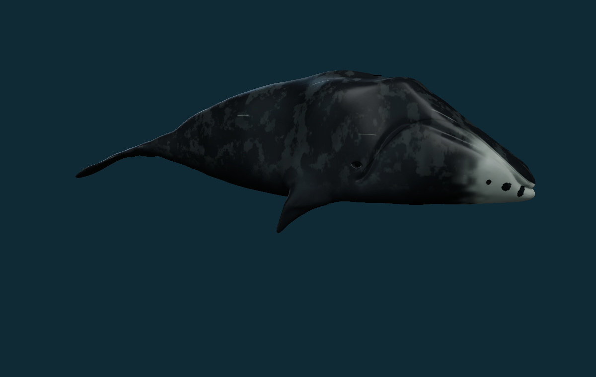

Bowhead whale: rebuilt skin, head and baleen
The bowhead now has a larger arched head, high lower lips, short broad flippers and wider flukes. All colors and materials from the supplied sculpt are discarded. New charcoal skin, subtle irregular grey sloughing and a white chin with dark islands follow the supplied photo references.
Explore the interactive bowhead · Main archive record · Download the textured GLB
